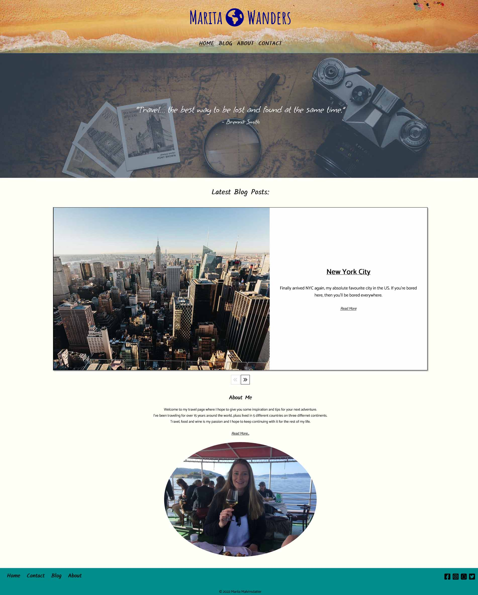
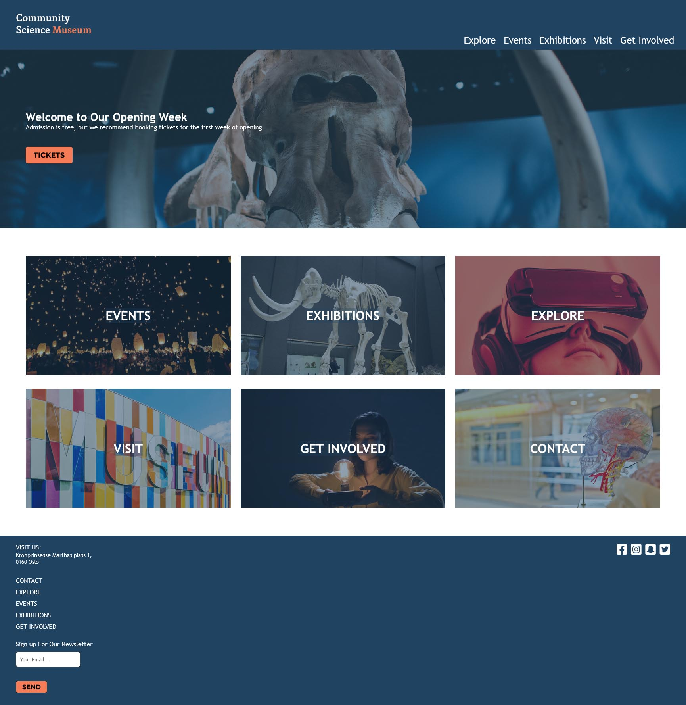
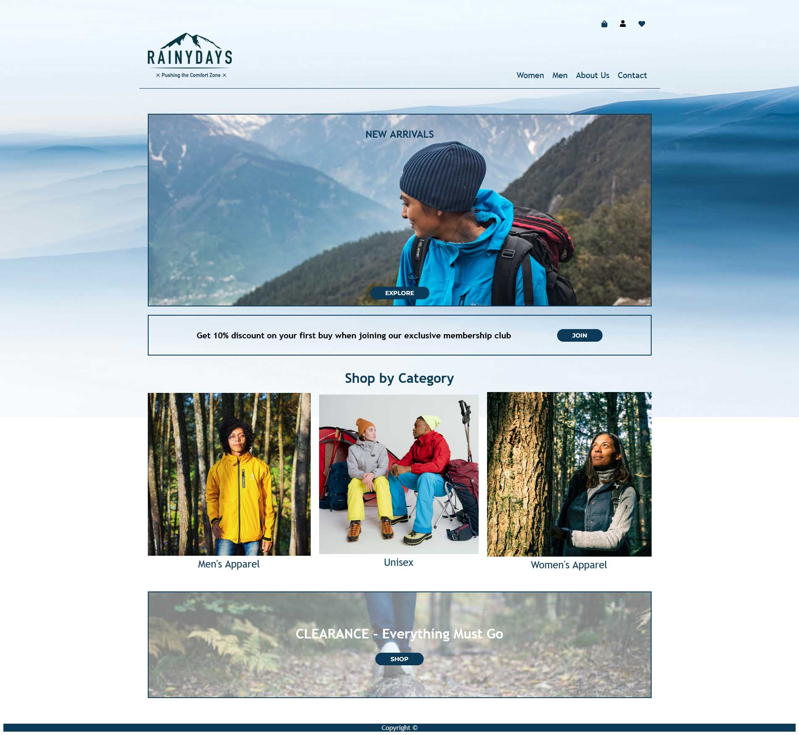

Portfolio

Marita Wanders
This was our Exam Project where we had to make a blog of our choosing, and put into practice the skills we had learned during our first year of studies. I chose a travel blog.

Science Museum
This was our Semester Project where we had to make a website for a Community Science Museum, where the core target audience was children aged 7-15, and families with younger kids.

Rainy Days
This was our Cross Course Project which we worked on throughout the year, making it better as we learned more skills. We started with basic HTML/CSS, then added on JS in the end.